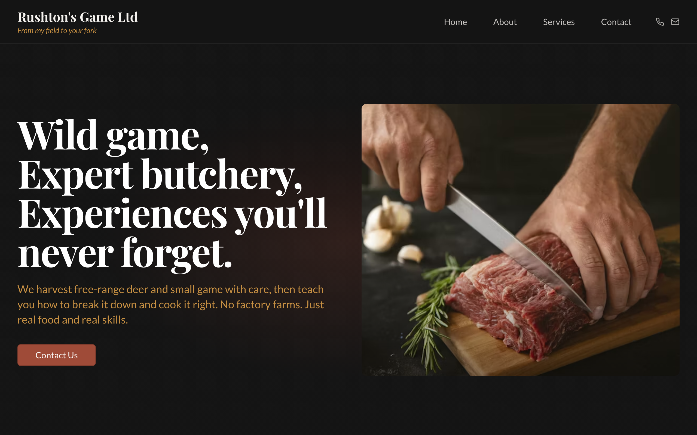
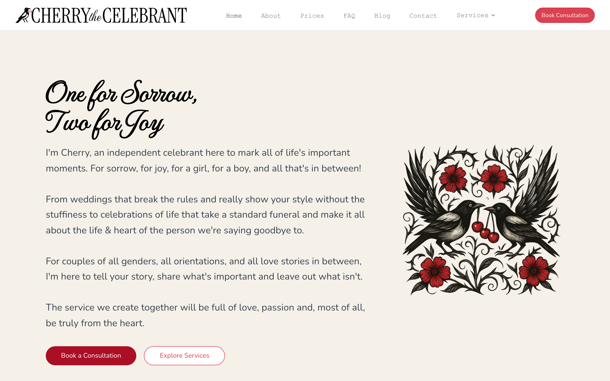
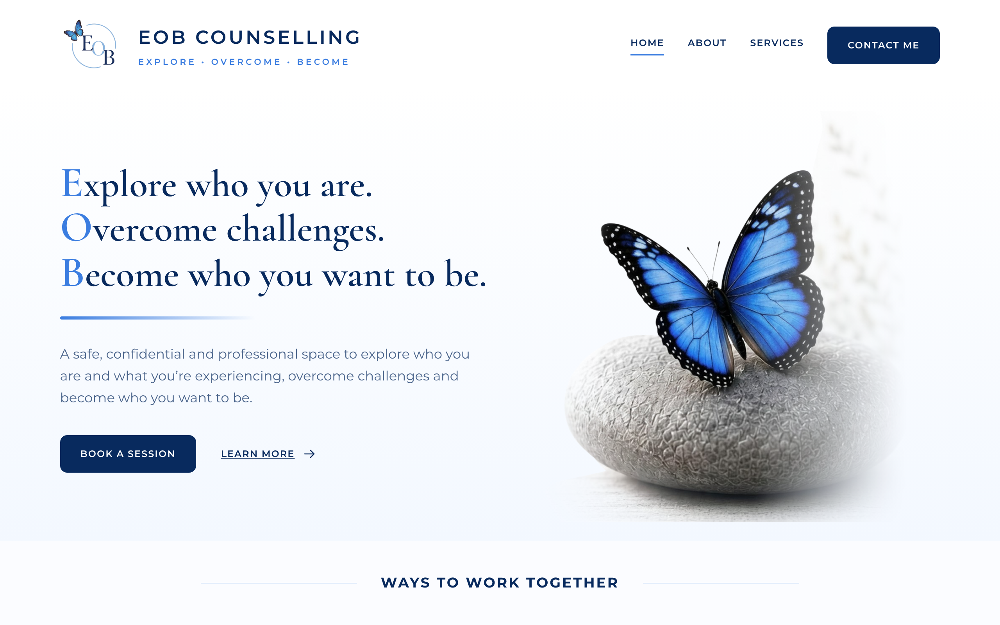
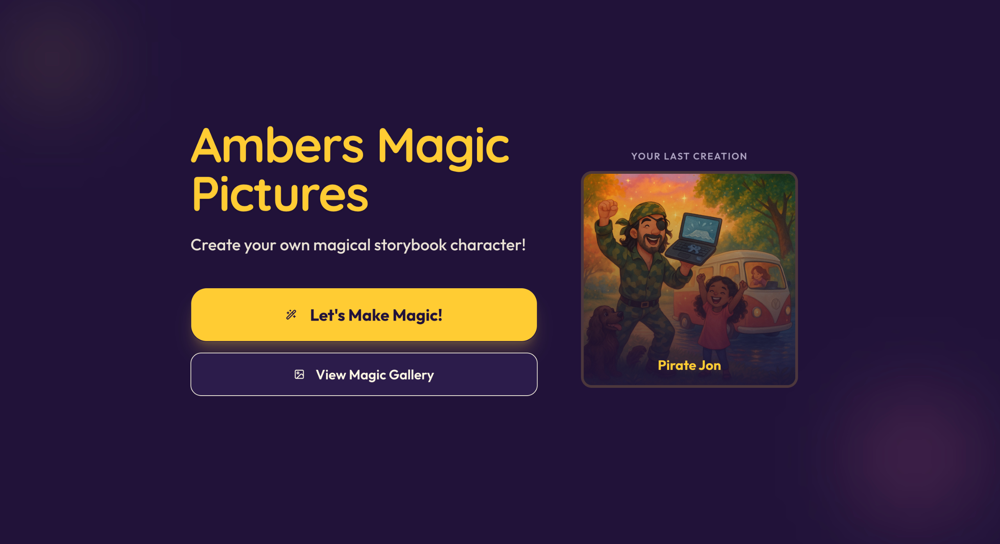

UX Designer
Award-winning UX designer & AI trainer bridging human-centred design with AI-powered delivery.
Find out more ↓About me
I started at Citizens Advice as their youngest ever advisor. Nearly two decades helping people through debt, housing, and crisis showed me the same thing every time: the systems meant to help people were letting them down. I moved into UX because design can change that.
Then AI arrived and changed what is possible. If you work in a charity, an NHS team, or any organisation running on not enough, you do not need more to learn. You need the heavy lifting done so you can focus on what only humans can do. That is what I build. That is what I teach.
If that sounds like the kind of thinking you need, let's talk.
Selected work
Voxpopme's agentic research assistant had no design playbook. As sole designer I shaped the conversation, onboarding, microcopy and loading states, from first session to habit.
Read case studyWhat started with designing for children in hospital became a mission to modernise how the NHS works. Training one team started a volunteer programme that has since upskilled thousands of professionals.
Read case studyAn AI tool that matches homeless people to available accommodation. We won the hackathon and were asked to present to MPs in Parliament. Grounded in research with people who've lived it.
Read case studyI rebuilt my workflow around Claude as a collaborator, writing skills that generate production-ready components, decks and copy, operating at team scale as one person.
Read case studySide projects
Real websites for real people — none of them paid in cash. Each one was made in exchange for a trade, an experience, or a gift.
Venison & a deer-stalking day for my husband

A dark, appetite-led site for a wild-game butcher. Field to fork, no factory farms.
View live site ↗My wedding ceremony

A bold, characterful site for an independent celebrant — weddings, funerals and everything in between.
View live site ↗A friend starting her own practice

A calm, reassuring site for a counsellor launching her own practice — a birthday gift built with heart.
View live site ↗My niece's 5th birthday

A playful AI storybook maker that lets her tell her own stories and illustrate them with her own magic pictures.
Ask to see it ↗Speaking & training
Presented hackathon-winning research and prototype to MPs.
March 2026Main stage speaker on AI-driven development.
March 2026Full-stack developer conference.
November 2025AI tools for UX. Also selected as summer programme mentor.
2025300+ attendees.
December 2024100+ attendees. Practical AI in UX research and design.
May 2024Also spoken at: ShropGeek, Women in Tech Birmingham, Product Leaders Lab, BrUXm, ElevatHER, Women in GovTech, and delivered AI training for Barnardos, Anawim, The Luca Foundation, JW3, and School of Code.
Kind words
"Becki was a delight to work with. She was open, engaged, self-assured and proactive. Her approachable style put the team and our stakeholders at ease, and fostered a very collaborative relationship."
"Becki has demonstrated exceptional commitment. Her unwavering desire to contribute positively to the world, combined with her aptitude and eagerness to embrace new knowledge, makes her a tremendous asset to any team."
"Becki's proactive and empathetic approach, combined with her knack for efficiency and leadership in organisational initiatives, makes her an asset in any project management or leadership role."
"Becki's hard work, dedication to continuous learning, and exceptional organisational skills make her an invaluable team member. Working with Becki guarantees a harmonious team environment and stellar project outcomes."
"One highlight of the day was an amazing session with the incredible Becki Floyd, my School of Code Mentor. Becki's feedback was fantastic! Her guidance is always such an inspiration!"
"Becki's exceptional organisational skills and leadership qualities shine brightly. Her passion for UX design, combined with her altruistic nature of sharing resources, makes her a standout colleague."
"Becki's involvement in event promotion and management has been pivotal to our success. Her contributions were instrumental in selling out numerous events."
"Becki's unparalleled organisational skills, coupled with her ability to collaborate effectively and her dedication to excellence, make her a significant asset to any team."
"Becki's dedication, reliability, and teamwork set her apart. Her quick adaptation to overcome challenges and her rapid learning ability were evident in our collaborative project."
"Working with Becki on a project was an immense pleasure. Her mix of enthusiasm, creativity, communication skills, empathy, and organisational abilities made a significant impact."
"Becki's energy and enthusiasm throughout the bootcamp were infectious. Her organisational skills showcased her exceptional ability to manage and execute projects with vitality and precision."
"Becki's creativity and problem-solving skills are exceptional. Working with Becki is not only enjoyable but also immensely enriching, as she brings a unique and positive energy to every project."
"Becki's pride in her work is evident in everything she does. Her approachability, professionalism, and confidence ensure the highest standard of work."
"As a mentor, Becki was instrumental in my development at Citizens Advice. Her enthusiasm, comprehensive training, and supportive nature enhanced my skills and made my transition seamless."
"Becki's passion for enhancing her colleagues' skills and her innovative approach to learning have significantly contributed to creating an efficient and confident team."
"Having collaborated with Becki for over a decade, I can wholeheartedly recommend her. Her enthusiasm, diligence, and technical proficiency are outstanding."
"Over 18 years, Becki has demonstrated exceptional qualities, notably in training and supporting staff and volunteers. Her contribution to creating a positive work environment is remarkable."
"Becki's reliability, hard work, and welcoming nature make her an exceptional team member. Her positive attitude contributes significantly to a harmonious workplace."
"Becki's inherently positive nature and her capability to inspire both teams and individuals are commendable. She leaves a legacy of confidence and competence wherever she goes."
"Becki's dedication to personal and professional development is unparalleled. Her creation of a supportive technical community showcases her as a source of inspiration."